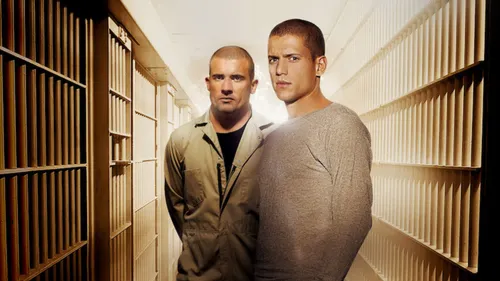

ციხიდან გაქცევა (ინგლ. Prison Break) — ამერიკული ტელესერიალი, რომლის გადაღება 2005 წელს დაიწყო და გაგრძელდა 2009 წლამდე. სერიალის პრემიერა გაიმართა ამერიკულ ტელეკომპანია ფოქსის სამაუწყებლო კომპანიაზე, 2005 წლის 29 აგვისტოს. სერიალის სიუჟეტი ეხება ორი ძმის ამბავს. ლინკოლნ ბეროუზი სიკვდილმისჯილია მკვლელობისთვის, რომელიც მას არ ჩაუდენია, ხოლო მისი ძმა, მაიკლ სკოფილდი, საგულდაგულოდ ცდილობს მისი ციხიდან გაყვანას. სერიალის აღმასრულებელი პროდიუსერები არიან პოლ შერინგი, კევინ ჰუკსი, მეთ ოლმსტიდი, მარტი ანდელსტეინი, დაუნ პარუსი, ნილ მორიცი და ბრეტ რატნერი[1]. სერიალისთვის მთავარი მუსიკა შეთხზულია რამინ ჯავადის მიერ და ნომინირებული იყო პრაიმტაიმის ემის ჯილდოზე 2006 წელს[2]. სერიალი ხუთი სეზონისგან შედგება. პირველი და მეორე სეზონები შეიცავს 22 ეპიზოდს. მესამე 13-ს, მეოთხე სეზონი 24-ს, ხოლო მეხუთე — 9 სერიას. 2017 წლის 12 დეკემბერს დომინიკ პარსელმა თავის Instagram-ზე განაცხადა, რომ მიმდინარეობდა სერიალის მე-6 სეზონზე მუშაობა.[3] 2018 წელს Fox-მა ოფიციალურად დაადასტურა ზემოაღნიშნული ინფორმაცია.[4]
ციხიდან გაქცევის ორიგინალურ იდეას — კაცი განზრახ ხვდება ციხეში, რომ დაეხმაროს ვინმეს (ამ შემთხვევაში მის ძმას) ციხიდან გაქცევაში — პოლ შერინგს სთავაზობდა დაუნ პარუსი, რომელსაც უნდოდა ნამდვილი მოქმედებითად ორიენტირებული სერიები გადაეღო. შერინგს ეს აზრი მოეწონა და დაიწყო უსამართლოდ გასამართლებული ერთ-ერთი ძმის ამბავზე სიუჟეტის მომზადება. 2003 წელს მან ეს იდეა ფოქსს გააცნო, რაზეც ამ უკანასკნელისგან უარი მიიღო. ამის შემდეგ იგი რამდენიმე ხანი კიდევ ხვეწდა იდეას, თუმცა ამაოდ. მის შეთავაზებას კვლავ უარყოფითი პასუხი მოჰქონდა, რადგან არხების ხელმძღვანელობის აზრით, ეს იდეა უფრო შეესაბამებოდა ფილმს, და არა ტელესერიალს[5]. შემდგომ, ციხიდან გაქცევის მინისერიალად გადაღების პერსპექტივა გაჩნდა. ამ დროს სცენარის ყურადღება სტივენ სპილბერგმა მიიპყრო. ამგვარად, ციხიდან გაქცევა მინისერიალად აღარ გამოცემულა. პოპულარულ სერიალებთან ერთად, როგორებიცაა დაკარგულები და 24, ფოქს ნეტვორკმა ციხიდან გაქცევის გადაღება 2004 წელს დაიწყო[6]. საცდელი ეპიზოდი გადაიღეს ერთი წლის შემდეგ, მას შემდეგ რაც შერინგმა დაწერა სცენარი და ხუთ თვის შემდეგ, სერიალის სარეკლამო რგოლიც გამოვიდა[7].
ციხიდან გაქცევის პირველი სეზონის უმრავლესობა გადაღებულია ჩიკაგოში[12]. გადაღება ხდებოდა ჯოლიეტის ციხეში, რომელიც გადაღებულია როგორც ფოქს რივერ შტეიტის გამოსასწორებელი ციხე. ლინკოლნის კამერა, საავადმყოფო და ციხის ეზო გადაღებულია ამავე ციხეში[13]. ლინკოლნის საკანში იყო დატყვევებული ცნობილი ამერიკელი მკვლელი ჯონ უეინ გეისი. გარე სცენები არის გადაღებული ჩიკაგოში, ვუდსტოკში და ჯოლიეტში. ასევე გადაღების ადგილები შეიცავს ო’ჰაირის საერთაშორისო აეროპორტს ჩიკაგოში და ტორონტოს ონტარიოში, კანადა. ციხიდან გაქცევის ყოველ ეპიზოდზე იხარჯებოდა $$2 მილიონი აშშ დოლარი ილინოისის შტატში, ხოლო საბოლოო დანახარჯმა 2005 წელს მიაღწია $24 მილიონ აშშ დოლარს[12]. განახლებული მეორე სეზონის გადაღება დაიწყო 2006 წლის 15 ივნისს დალასში, ტეხასი[14]. გადაღებები ხორციელდებოდა პატარა ელმში, დეკატურში და მინერალ უელსში[15]. ბევრმა ამ ადგილებიდან წარადგინა სხვადასხვა ამერიკული ქალაქები[16]. სავარაუდოდ შოუზე დაიხარჯა $50 მილიონი აშშ დოლარი დალასში[17]. მეორე სეზონის ბოლო სამი სერია გადაღებულ იქნა პენსაკოლაში, ფლორიდას შტატში[18]. თითოეული ეპიზოდის გადაღება გრძელდებოდა რვა დღე და დაახლოებით $1.4 მილიონი აშშ დოლარი იგზავნებოდა თითო ეპიზოდიდან ადგილობრივ ეკონომიკაში[19]. მესამე სეზონი გადაიღეს ტეხასში და თითო ეპიზოდის ბიუჯეტი შეადგენდა $3 მილიონ აშშ დოლარს[20]. თითოეული გარე სცენა ლინკოლნისა და გრეტჩენის მონაწილეობით საჭიროებდა პანამადან გასვლას. მეოთხე სეზონი ძირითადად გადაიღეს ლოს-ანჟელესში, კალიფორნია. მისი პირველი ეპიზოდი იყო სპეციალურად ორსაათიანი.
იხიდან გაქცევის თითოეული სეზონისთვის არჩეულ იქნა ათი ან მეტი ახალი მსახიობი ბევრ ვარსკვლავთან ერთად. პირველი სეზონის პერსონაჟები ძირითადად იყვნენ ფოქს რივერ შტეიტის გამოსასწორებელი ციხის პატიმრები. მეორე სეზონიდან პატიმრებს დაემატათ ბევრი მთავარი გმირი, მათ შორის FBI-ის აგენტი, რომლის მთავარი მიზანი იყო რვა გაქცეული პატიმრის შეპყრობა. მესამე სეზონმა, რომელიც გადაღებულია პანამაში, გაგვაცნო ოთხი ახალი მთავარი პერსონაჟი, ორი მათგანი ფედერალური სონას გამოსასწორებელი ციხის პატიმარი. ყველაზე დიდი ცვლილებები შეიტანა სერიალში პერსონაჟების სიკვდილმა. სერიების შემქმნელი, პოლ შერინგი ხსნის, რომ მთავარი პერსონაჟების სიკვდილი „აუდიტორიას შესძენს მეტ საშიშროებას ჩვენ პროტაგონისტებზე“[22] .